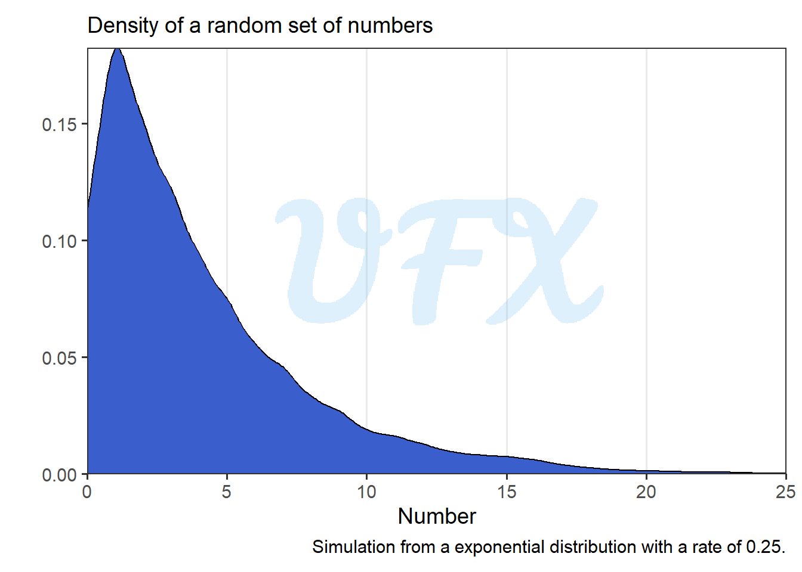
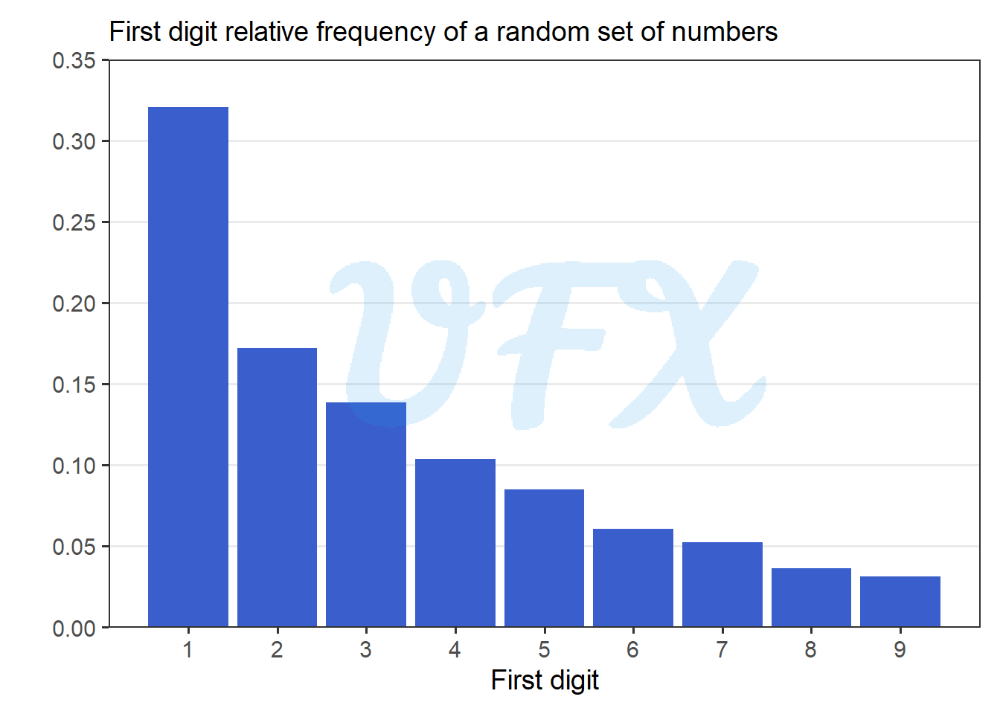
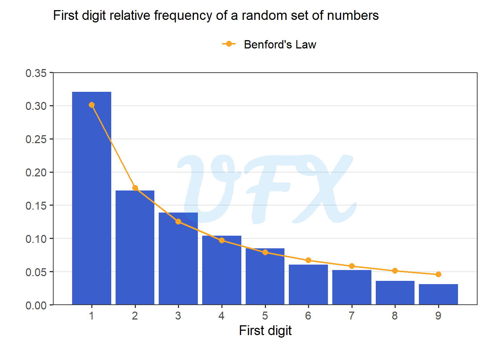
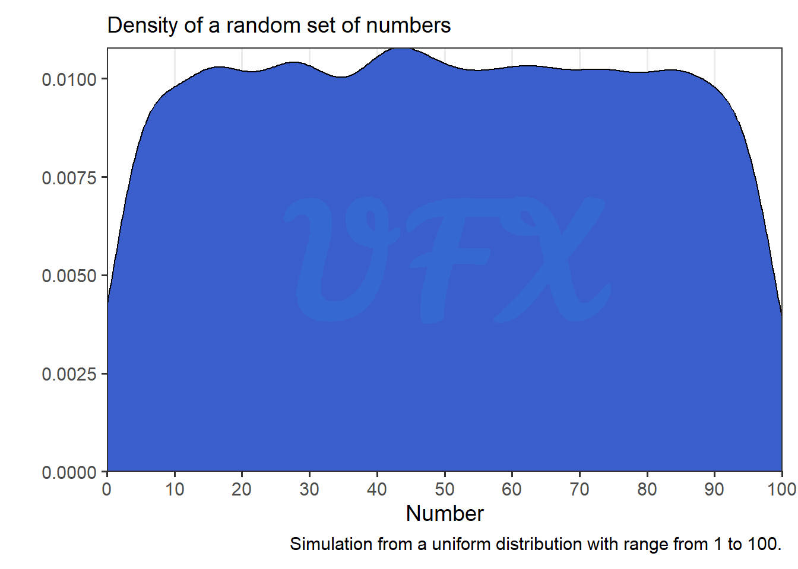
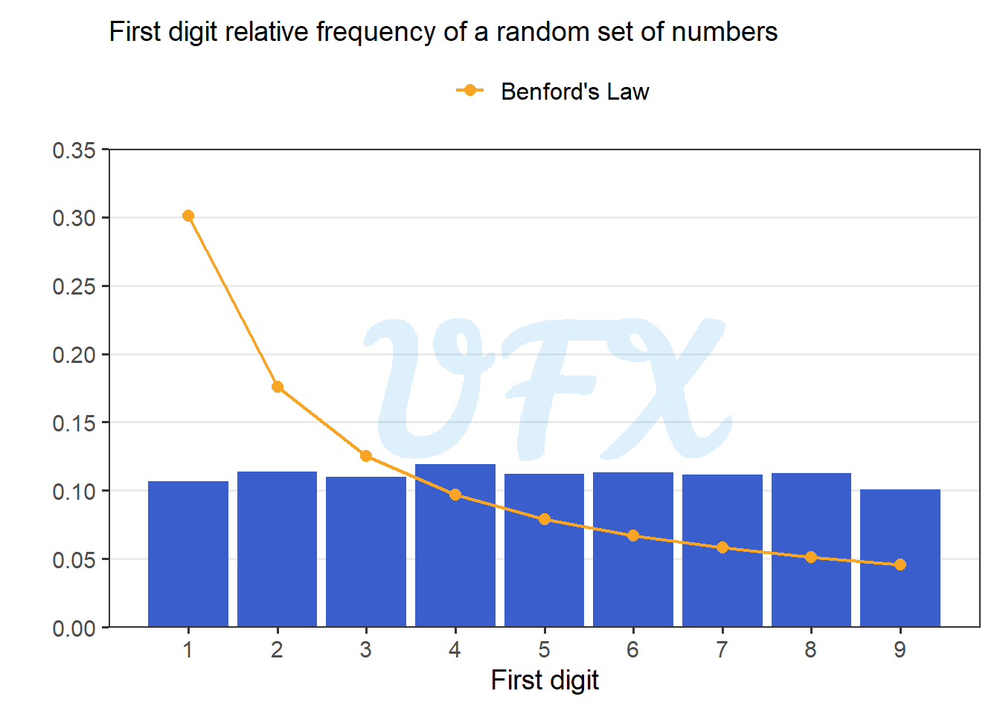

In this post of the series Intro to, I’ll give an introduction to the Benford’s Law.
Introduction
The Benford’s Law, also known as the first-digit law, studies the distribution of numerical data’s leading digits.
It reveals that the probability of a number having a specific first digit is not uniform in many naturally occurring datasets, as a result, this law emphasizes the inherent characteristics and tendencies of numbers in our numerical system, revealing natural patterns.
Benford’s law equation is given by:
\[ \log_{10}\left( \frac{x+1}{x}\right), \]
where \(x\) is the first digit of a number. So let’s see how the law is comparison to our simulation.
Simulated application
Exponential distribution
First let’s simulate a set of random numbers from a exponential distribution with a rate of 0.25.

Next, we extract the first digit of each number and calculate the frequency of each one.

As we see in the figure above, smaller digits are more common, and as the digit grows larger, the frequency decreases. Now let’s compare to the expected result.

As we can see Benford’s Law is very similar to our data, but is this always the case?
Uniform distribution
Now let’s simulate a set of random numbers from a uniform distribution with a range from 1 to 100.
Here we can the simulated data:

Now let’s calculate the frequency of the first digits.

We can now see that the law deviates from the simulated data, but why? Because we are sampling from a set of numbers where the first digit pool is equal, the probability of the law working increases as the range increases and includes only a portion of the numbers in the first digit or the data is random.